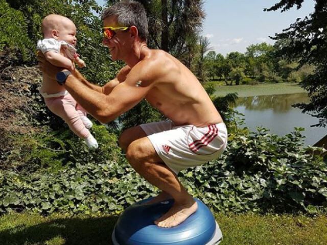
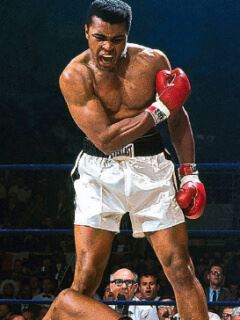
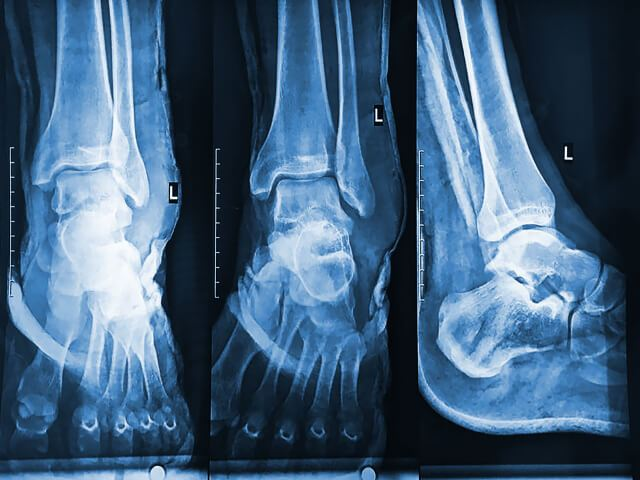
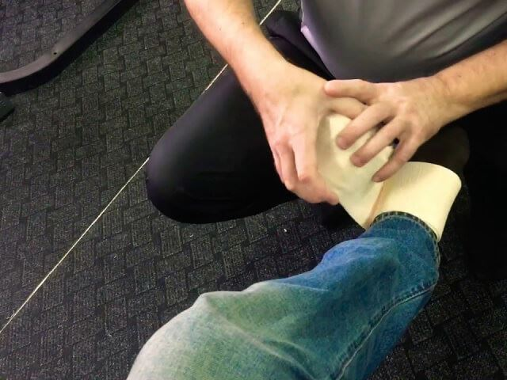
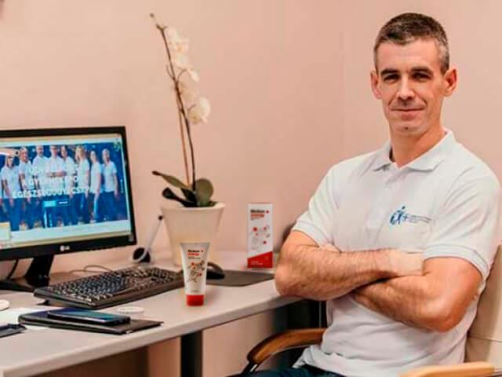
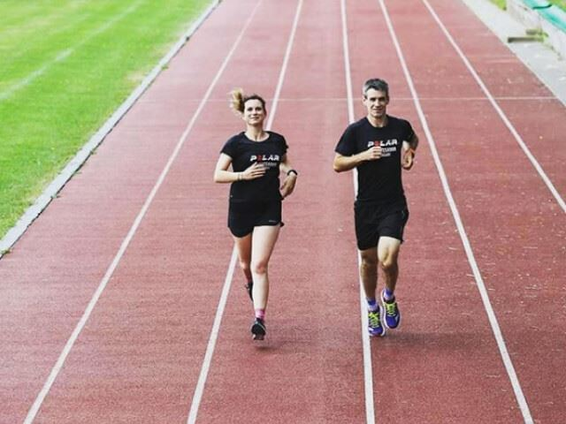

„Не позволявайте на болката да застане на пътя ви към по-атлетично тяло“
Здравейте всички! Нека се представя на тези, които не ме познават - казвам се Иван. Може би някои от вас следят моя блог за бокс, но сега за първи път ще споделя как започна всичко... И почти приключи след първата контузия. Това, което ми помогна, не бяха лекарите, а продукт, за който ще ви разкажа по-долу.
Започнах да се занимавам с бокс на 38 и не съм смутен от този факт
Като дете спортувах доста, започнах от лека атлетика и стигнах до футбол. Тренировките ми помогнаха да изградя сърцевина за цял живот. Но когато влязох в университета, приятелството ми със спорта приключи и се сприятелих с лошите навици. Когато станах на 30, вече имах огромен корем, но това не ме притесняваше. Натрупвах тегло постепенно, без резки промени. Размерът на дрехите ми вървеше нагоре.
Когато станах на 38, започнаха проблемите в семейството ми. Жена ми пускаше намеци, че трябва да ходя на фитнес. Проблемът беше очевиден за мен, но не знаех откъде да започна. Не се интересувах от вдигане на тежести, защото още от дете се интересувах от спорт, изискващ бързина и координация. По време на едно от партитата в офиса се отпуснах твърде много и разказах тази история на колегата си. Той каза, че наскоро е започнал да се занимава с бокс и има нужда от спаринг-партньор от същата тежка категория.
Чувал съм много истории за мъже, които започнали да се занимават с бойни изкуства дори на 50, така че не се поколебах да се съглася.
Най-трудната битка е, когато трябва да се бориш за мързел за щастие!
- Мохамед Али
Прочетете повече
Случайно нараняване на коляното почти ме изкара извън пътя
Бях доволен от всичко през първите 6 месеца: краката и ръцете ми станаха по-силни, отслабнах бързо и се гордеех със себе си. Но след време когато прескачах въже по време на една от тренировките, усетих болка в областта на глезена. Не ми пукаше, докато не се случи отново няколко дни по-късно. Когато тренировките ми станаха по-интензивни, глезенът започна да ме боли толкова силно, че не можех да сложа тежести на краката си. Болката се изостри, когато се прибирах вкъщи, останах в леглото няколко дни.
Треньорът беше последната ми надежда
В продължение на няколко седмици изпусках тренировките, затова посъветвах колегата си да си намери нов спаринг-партньор. На свой ред той разказа на нашия треньор за това. Същата вечер ме помолиха да дойда в залата: треньорът искал да ми даде нещо.
Когато ме срещна и видя крака ми, обвит с еластична превръзка, каза, че може да ми помогне: „Такива неща се случват. Не е нужно да се тъпчиш с хапчета“. Отиде в кабинета си, върна се и ми даде малка ярка туба със специален гел с надпис . Той каза, че този гел го изправя на крака след 1 седмица, дори когато има по-сериозни наранявания. Не вярвах на каквито и да било лекарства, след като ми бяха предписани хапчета от лекар. Но моят треньор ме увери, че този гел е естествен и не трябва да се притеснявам от странични ефекти.
Как станах на крака
Използвах този гел всяка сутрин и вечер и увивах крака си с еластична превръзка. Гелът има дискретен аромат и в началото създава усещане за студ, но след това за топлина. Той не прави краката или наранената зона лепкави и се абсорбира бързо. Можете да усетите ефекта веднага след няколко минути, и да се върнете към рутината си. Болката в глезена почти изчезна след около седмица, спрях да увивам крака си. Две седмици по-късно напълно забравих, че наскоро не можех да се движа правилно. Между другото, е полезен не само за ставите, но и за мускулите. Прилагам го преди всяка тренировка - така загрявам и предотвратявам нови наранявания.
Оттогава изминаха четири години, сега съм на 42. Аз съм редовен състезател в приятелски състезания между боксови клубове. Започнах отново да тичам и съм готов да продължа. Тайната на успеха е проста: ако се сблъскате с някои препятствия, трябва да потърсите решение, вместо да ги използвате като извинение. През всичките тези години се стремях към успех само благодарение на моя треньор. По този начин знам от първа ръка, че понякога знанията ви и многобройните медицински предписания не са достатъчни.
Спортът реши семейните ми проблеми
Както вече споменах, започнах отново да тичам. Но не съм сам! Реших да накарам жена ми също да започне да спортува. Сега семейството ни тича всяка сутрин в парка. Разстояние 4 км. Винаги загряваме и използваме преди да започнем, защото опитът ме научи, че това е необходимо. Ето защо се надявам, че статията ми сега е толкова полезна за вас, колкото и съветите на моя треньор преди четири години. Поръчвам тук , моят треньор сподели този сайт с мен. Купувам няколко бройки: за останалите момчета и за да държа няколко опаковки вкъщи в аптечката.
Помага ли при болки в гърба? Не спортувам, но работата ми води до напрежение в долната част на гърба през цялото време.
Да, разбира се. Между другото, препоръчах го на баща ми - той имаше проблеми и с гърба. Не знаех нищо за подобни продукти преди, но сам съм го тествал, затова му препоръчах . Сега навсякъде навреме довежда внука си, не знам защо се колебае да тича с нас.
Е, ако започнете да спортувате на 40, глезенът не е единствената част от тялото, с която може да имате проблеми :) Защо не сте се променили по-рано?
Абсолютно съм съгласен, наистина помага. Аз съм на 30 и вдигам тежести втора година. Когато бях начинаещ, се изморих от лекари заради проблеми в коленете. Момчетата от фитнеса също ми помогнаха, препоръчаха ми да си купя някакъв гел със спонгила. Опитах много продукти, но само този работи. Съдържа някои масла и помощни компоненти. Сигурно няма да го намерите в обикновена аптека, аз го купувам само на сайта.
Удоволствието да тренирате е болката в мускулите, която изпитвате след като приключите!
Аз съм треньор по танци и винаги казвам на момичетата да се затоплят добре. Разтегнете се добре и нищо няма да ви навреди със сигурност! Що се отнася до лекарите, вие сте прави, те предписват лекарства и след това само се пристрастяваме.
Това е добра идея, но не бива да спирате да увивате глезена си с еластична превръзка. Трябва да се грижите за себе си.
Използвах го за известно време, но бързо приключи! Тубичката е малка.
Бъдете по-внимателни!
Следя този блог от доста време и реших, че съм единственият, който се е сблъсквал с този проблем. Когато отново изпитвам болка, направо се плаша. Възрастта си е възраст, сами знаете ...